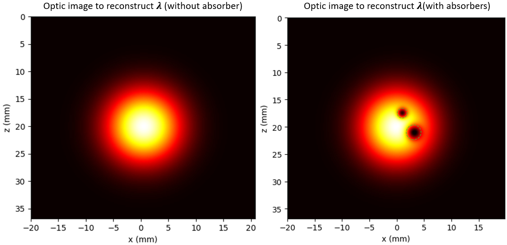
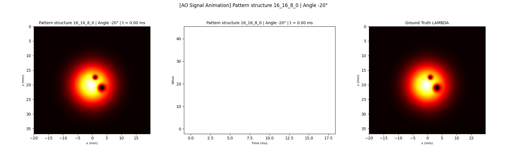
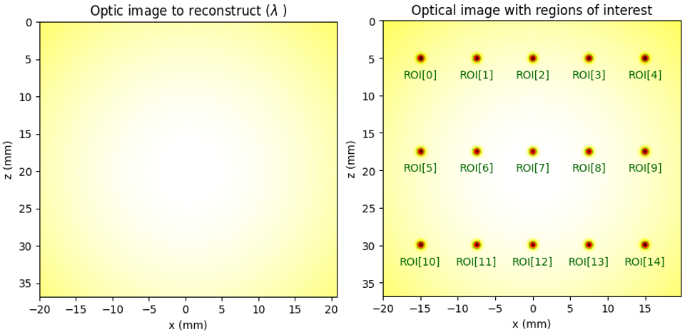
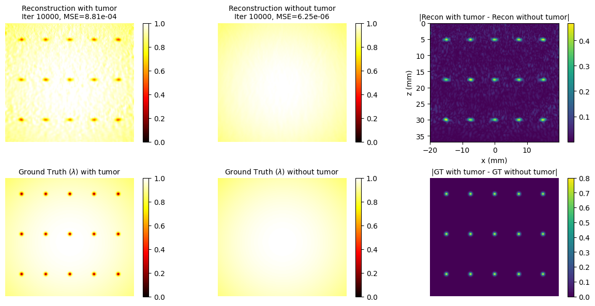
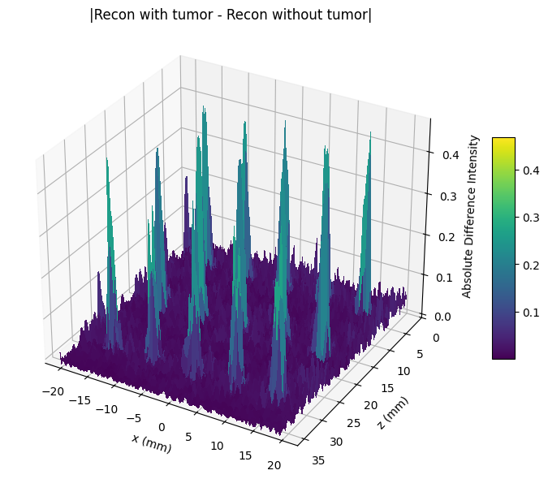
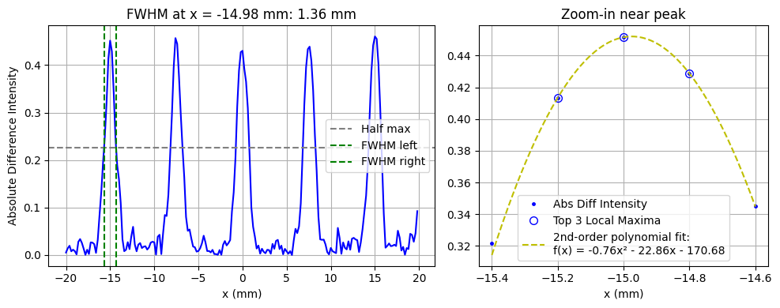

Results
Simulation results
Dans un premier temps, nous avons étudié le comportement de nos algorithmes de reconstructions avec des données simulées. Comme expliqué dans cette page (mettre lien), les algorithmes itératifs tente de reconstruire \(\lambda\) à partir de la relation : \[ A = \lambda \times y \] Lorsque nous travaillons avec des données simulées, nous calculons le signal acousto-optique (\(y\)) directement à partir de l'enveloppe au carré du champs acoustique simulé (\(A\)) et de l'image ground truth également simulé (\(\lambda\)). \(y\) étant directement dérivé de l'image que nous voulons reconstruire, les algorithmes convergent normalement (sauf contraintes particulière) vers la solution. L'image ground truth dans ce chapitre est simulé à partir de la logique mathématique détaillée dans cette page (mettre lien).




